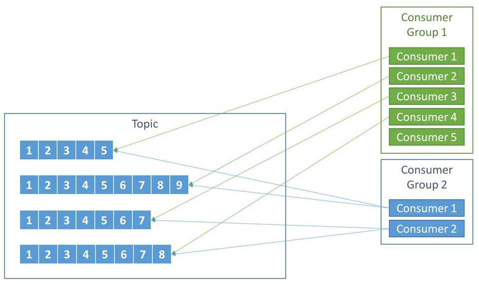

Producers encounter retriable or non-retriable errors.
Producers can wait for acknowledgements:
acks=0, acks=1, acks=all.
Writing Messages
// create a producer with a configuration
Properties props = new Properties();
props.put("bootstrap.servers", "myBroker1:9092,myBroker2:9092");
props.put("key.serializer", "org.apache.kafka.common.serialization.StringSerializer");
props.put("value.serializer", "org.apache.kafka.common.serialization.StringSerializer");
KafkaProducer<String, String> producer = new KafkaProducer<>(props);
// create and send a record
ProducerRecord<String, String> record = new ProducerRecord<>("aTopic", "aKey", "aValue");
try {
Future<RecordMetadata> f = producer.send(record);
RecordMetadata metadata = f.get(); // synchronous
} catch (Exception e) {
...
}
Reading Messages
Each partition is read by one consumer.
They can be rebalanced.

Reading Messages
In a consumer group, the first consumer to join becomes the group leader.
The group leader is responsible of partition assignement using a partition assignor.
Consumers keep tracks of the message they consumed by commiting the corresponding offset.
Consumers send heartbeats to the group leader to signal they are alive.
Reading Messages
// create a consumer with a configuration
Properties props = new Properties();
props.put("bootstrap.servers", "myBroker1:9092,myBroker2:9092");
props.put("group.id", "aGroup");
props.put("key.deserializer", "org.apache.kafka.common.serialization.StringDeserializer");
props.put("value.deserializer", "org.apache.kafka.common.serialization.StringDeserializer");
KafkaConsumer<String, String> consumer = new KafkaConsumer<>(props);
// subscribe to one topic
consumer.subscribe(Collections.singletonList("aTopic"));
Reading Messages
Map<String, Long> countMap = new HashMap<>();
try {
while (true) {
// read
ConsumerRecords<String, String> records = consumer.poll(100); // 100=timeout interval
for (ConsumerRecord<String, String> record : records) {
int updatedCount = 1;
if (countMap.countainsValue(record.value())) {
updatedCount = countMap.get(record.value()) + 1;
}
countMap.put(record.value(), updatedCount)
}
}
} finally {
consumer.close();
}
Reading Messages
Map<String, Long> countMap = new HashMap<>();
try {
while (true) {
// read
ConsumerRecords<String, String> records = consumer.poll(100); // 100=timeout interval
for (ConsumerRecord<String, String> record : records) {
int updatedCount = 1;
if (countMap.countainsValue(record.value())) {
updatedCount = countMap.get(record.value()) + 1;
}
countMap.put(record.value(), updatedCount)
}
try {
consumer.commitSync();
} catch (CommitFailedException e) { ... }
}
} finally {
consumer.close();
}
Kafka Reliability
There is always tradeoffs between reliability and performance.
Kafka is flexible enough to host reliable and non-reliable topics.
Kafka Reliability
Order guarantee: if the same producer writes A then B in the same partition, then offset(A) > offset(B).
Messages are considered committed when they are written to all in-sync replicas.
Acknowledgements can be sent to producers when the message is committed (acks=all).
Committed messages will never be lost if at least one replica remains alive.
Only committed messages can be read by consumers.
Kafka Reliability - Replication
With N replicas for a partition, N-1 brokers can be lost.
Tradeoff between availability and hardware resources.
A minimum number of in-sync replica can be configured for committing messages.
Tradeoff between availability and reliability.
Unclean election is disabled by default.
Tradeoff between availability and consistency.
Kafka Reliability - Producer
The acks parameter is a tradeoff between throughput and reliability.
Automatic retries should be enabled for retriable errors.
The optimal number of retries depends on the application.
Be careful of potential duplicates.
Must deal with non-retriable errors (or unsuccessfully retried errors).
Kafka Reliability - Consumer
Data is available to consumer only if it has been written to all in-sync replicas (committed data).
Consumers must keep tracks of the message they reads by storing the offset of the last messages read (committed offset).
Commit frequency is a tradeoff between reliability and performance.
Kafka Reliability - Consumer
Consumers must handle rebalances.
Consumers must handle long processing times.
Workers pool.
Consumers must deal with state.
Store state per offset in an external system.
Kafka Reliability - Delivery Semantics
At most once: read, commit, process.
At least once: read, process, commit.
Exactly once introduces several problems to solve:
Deal with retry duplicates.
Deal with rebalance duplicates.
Kafka Reliability - Transactions
Transactional producers can send data to multiple partitions atomically.
Atomic read-process-write operation.
Transactional producers are identified by a user-defined transaction id.
Transactions are managed by transaction controllers.
Manage the transaction log (also called transaction topic).
Kafka Reliability - Transactions
Properties producerProps = new Properties();
...
producerProps.put("transaction.id", "aTransaction");
KafkaProducer<String, String> producer = new KafkaProducer<>(producerProps);
Properties consumerProps = new Properties();
...
props.put("group.id", "aGroup");
props.put("isolation.level", "read_committed");
KafkaConsumer<String, String> consumer = new KafkaConsumer<>(consumerProps);
Map<TopicPartition, OffsetAndMetadata> offsets = new HashMap<>();
producer.initTransactions();
Kafka Reliability - Transactions
while(true) {
ConsumerRecords<String, String> records = consumer.poll(200);
if (!records.isEmpty()) {
producer.beginTransaction();
for (ConsumerRecord<String, String> record : records) {
ProducerRecord<String, String> result = processRecord(record);
producer.send(result);
offsets.put(
new TopicPartition(record.topic(), record.partition()),
new OffsetAndMetadata(record.offset() + 1));
}
// similar to the commit of non-transactional producers
producer.sendOffsetsToTransaction(offsets, "aGroup");
// if this does not report success, then the transaction will be rolled back.
producer.commitTransaction();
}
}